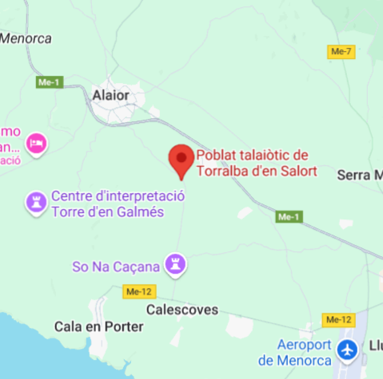

Descripció
Torralba d’en Salort és és un jaciment arqueològic que presenta una de les taules més altes que es conserven a Menorca, així com una sala hipòstila i dos talaiots.
Ubicació
Torralba d’en Salort és situa al sud de l'illa de Menorca, a la carretera entre Alaior i Cala en Porter.

Imatges